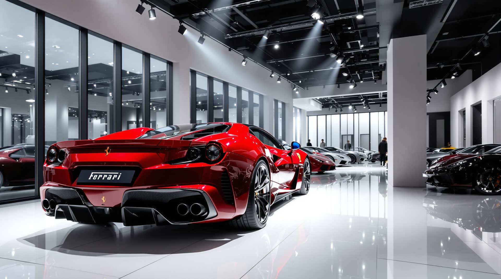
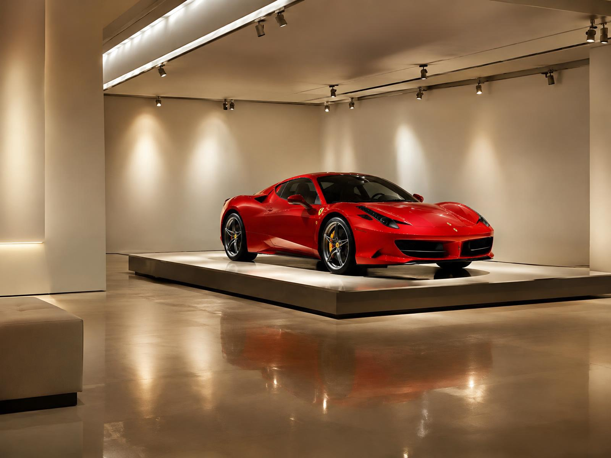

Desde 1998
El concesionario
Un espacio en Madrid donde la gama, el atelier y el servicio oficial conviven bajo el mismo estándar de fábrica.

El espacio
Un showroom pensado para mirar despacio
Seis plazas de exposición, luz calibrada y una sala de entrega independiente. El recorrido está diseñado para ver el coche desde todos los ángulos antes de hablar de configuración.
En la misma planta conviven el atelier de personalización y el área de asesoramiento, para que cualquier cambio se pueda decidir con las muestras delante.
Avenida de Burgos, 12
9:00 – 19:30
Atelier y servicio oficial
Dos áreas que trabajan con el mismo criterio: la especificación original del vehículo no se negocia.
Compromiso
Cómo trabajamos
El mismo protocolo para una entrega nueva que para una revisión de mantenimiento.